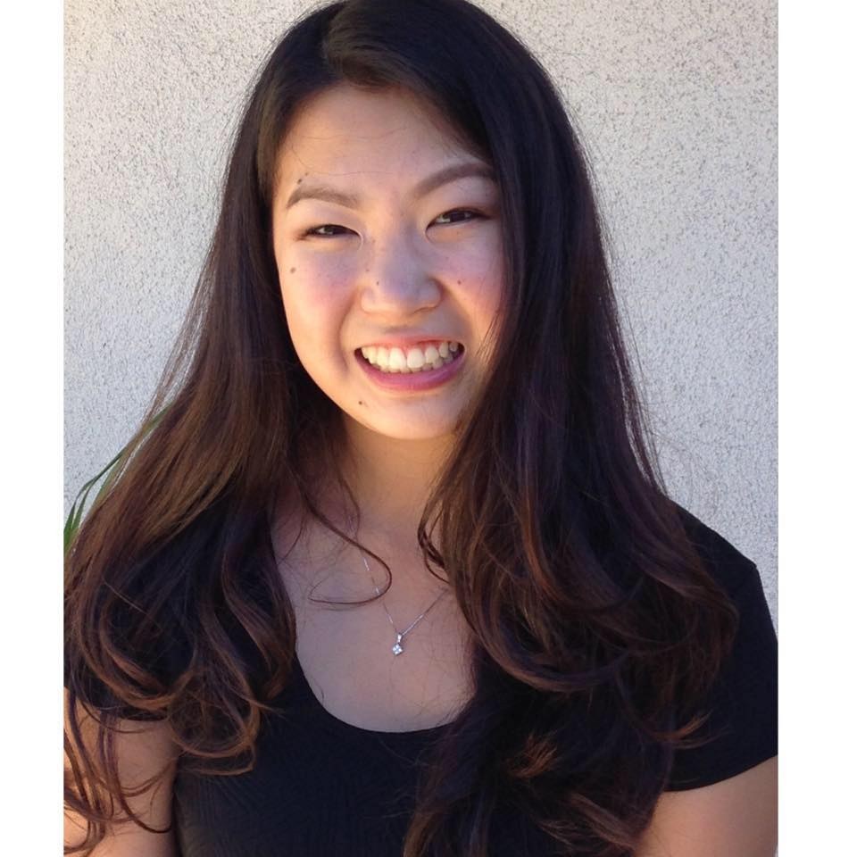

Hi! My name is Sydney Ikegami. I am currently a second year at UC Berkeley and am pursuing a degree in both political eonomy and sociology. I spend a lot of my time mentoring kids through OASES, a club on campus. I am currently on the board of this club and I hope that people will find the same hope and motivation to do well through these kids. I am currently looking for careers in marketing, specifically advertising, or finance, such as accounting or data analysis. In my free time I enjoy hanging out with friends, eating good food, and traveling around the world.